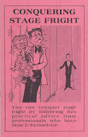

Nerves
12/6/2009
Comment: On my recent show I was absolutely nervous. I practised my lines as much as I could, and practiced handling my vent figure, but I felt it all "turned to custard". I did get some encouraging comments after the show, thus it was still a good day for all despite my worries.
So I will get back to it - but I need a recipe for driving away the nerves.
* * * * *
Answer: If its any consolation, we've all been there. With repeated shows, confidence grows and "butterflies" lessen. But until then maybe these words from one of the master pros, Col. Bill Boley, will help:
"Don't worry about making mistakes. Making mistakes is a very important way to learn things. I always seem to make every mistake possible when I start to do something. We learn by our mistakes so the more mistakes we make, the more we learn. It's knowing the mistakes that can
The above paragraph was taken from the article, Making Mistakes by Col. Bill Boley, found in the book, CONQUERING STAGE FRIGHT, published 1980 by Maher Studios. I do have a new copy of this very helpful work listed for eBay auction now. You will find it among my current auctions: Click Here
So I will get back to it - but I need a recipe for driving away the nerves.
* * * * *
Answer: If its any consolation, we've all been there. With repeated shows, confidence grows and "butterflies" lessen. But until then maybe these words from one of the master pros, Col. Bill Boley, will help:
"Don't worry about making mistakes. Making mistakes is a very important way to learn things. I always seem to make every mistake possible when I start to do something. We learn by our mistakes so the more mistakes we make, the more we learn. It's knowing the mistakes that can
{kind=link}

happen that helps us make plans so that they won't happen again. Nobody is born full grown. You had to fall a few times before you learned to walk. This is the value of experience. Learning by mistakes makes a professional, and separates you from the beginner. It takes a long time to become really professional, so don't get too impatient. Just keep plugging away."The above paragraph was taken from the article, Making Mistakes by Col. Bill Boley, found in the book, CONQUERING STAGE FRIGHT, published 1980 by Maher Studios. I do have a new copy of this very helpful work listed for eBay auction now. You will find it among my current auctions: Click Here